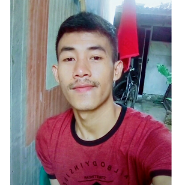

ABOUT MISYONO
| Nama | : Misyono |  |
| Tempat, tanggal lahir | : Wonosobo, 13 Agustus 1993 | |
| Jenis Kelamin | : Laki-laki | |
| Agama | : Islam | |
| Alamat | : Ds.Sendangsari Kec.Garung Kab.Wonosobo Jawa Tengah | |
| : misyono1010@gmail.com |
Nama saya misyono saya lahir pada Tanggal 19 Agustus Tahun 1993 di kota Wonosobo Jawa Tengah, sekarang usia saya sekitar 25 tahun, saya anak bungsu dari 5 bersaudara, hasil dari pernikaha ibu dan bapak saya, Ibu saya bernama Bundiah dan Bapak saya bernama Sujiyono, Saya terlahir bukan dari kalangan orang berada tapi bisa dikatakan orang yang sudah berkecukupan karena setiap hari bisa makan nasi tanpa harus membeli berasnya, Orang tua saya memiliki sedikit lahan yang dijadikan untuk bercocok tanam seperti padi itu sendiri hasil panen padi pun tidak pernah di jual oleh orang tua saya, hanya untuk kebutuhan makan sehari-hari, saya memiliki 2 kakak perempuan dan 2 kakak laki-laki, kakak perempuan saya sudah menikah sekarang sudah memiliki anak begitu juga kakak laki-laki, satu dari saudara laki-laki saya sekarang belum menikah sejak kecil saya tinggal bersama kedua orang tua saya di kota wonosobo di sebuah desa yang terpencil di lereng gunung sindoro.
Desa sendangsari itulah nama desa tempat saya dilahirkan, dibesarkan dan menuntut ilmu, Sekolah adalah cita-cita saya sejak kecil tapi karena hal keterbatasan biaya setelah saya lulus Sekolah Dasar saya memutuskan tidak melanjutkan sekolah dan memilih untuk membantu kedua orang tua saya, kedua orang tua saya adalah seorang buruh tani pasti hasil yang didapatkan tidak seberapa, dari dulu hingga sekarang, bekerja mengolah tanah milik orang lain, bekerja keras untuk menghidupi ke 5 anaknya hingga dewasa, Pahit manis telah diraakan kedua orang tua saya, tapi lebih banyak pahit yang dilalui orang tua saya, karena saya ikut merasaakanya, semenjak saya mulai tumbuh dewasa saya mulai berfikir untuk mencoba berusaha agar dapat membantu kedua orang tua saya, Setiap hari saya mengikuti bercocok tanam di lahan sendiri karena seringkali Ibu dan bapak saya terlalu sibuk bekerja mengolah tanah milik orang lain. Kedua orang tua saya sangat peduli dan sayang kepada anak-anaknya tapi saya kira ibu dan bapak saya lebih menyayangi dan peduli dengan saya karena mungkin saya anak bungsu hehheehe, tapi entahlah yang pasti mereka menyayangi semua anak-anaknya. Saya sangat menyayangi kedua orang tua saya, dan saya sangat bersyukur dilahirkan dimana orang tua saya sangat peduli dan menyayangi saya.
Tapi waktu semakin cepat berlalu, setelah saya beranjak dewasa saya mulai memikirkan bagaimana saya harus bekerja sendiri dan mandiri tanpa menyusahkan kedua orang tua saya, pada saat itu saya mulai mencoba bekerja di berbagai tempat, berkumpul dengan orang tua dan kakak pun sudah jarang, rasa rindu pun saya coba tahan demi agar saya dapat meringankan beban orang tua dan mencoba membahagiakan mereka. Setelah beberapa tahun saya bekerja berpindah tempat dari satu tempat ke satu tempat lain, Saya mulai berfikir untuk kembali melanjutka pendidikan saya, dan pada saat itu saya memutuskan untuk melanjutkan ke perkuliahan, namun keputusan itu tidak mudah untuk diterima oleh keluarga saya terutama kedua orang tua saya, saya faham alasan kedua orang tua saya tidak mensetujui keputusan saya karena mereka khawatir dengan biaya pendidikan yang mahal, Setiap saat saya memcoba membujuk kedua orang tua saya agar diizinkan melanjutkan pendidikan saya, dan akhirnya keluarga saya mengizinkan saya melanjutkan pendidikanya. Dan saat inilah saya memutuskan memilih melanjutkan pendidikan S1 di Stmik-Elrahama Jurusan IT semester 6, dengan harapan dapat menjadi seoarang yang berjiwa Qurani, Jago IT dan Lulus Jadi Jutawan..aminn